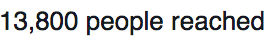
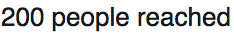
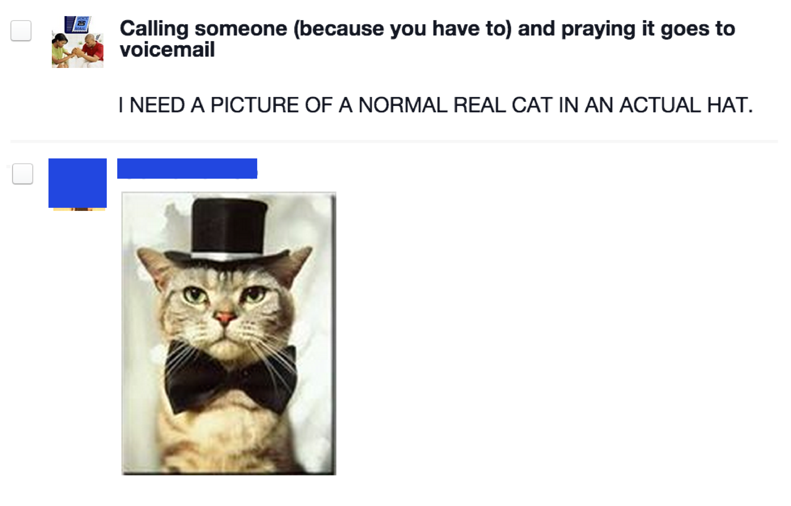
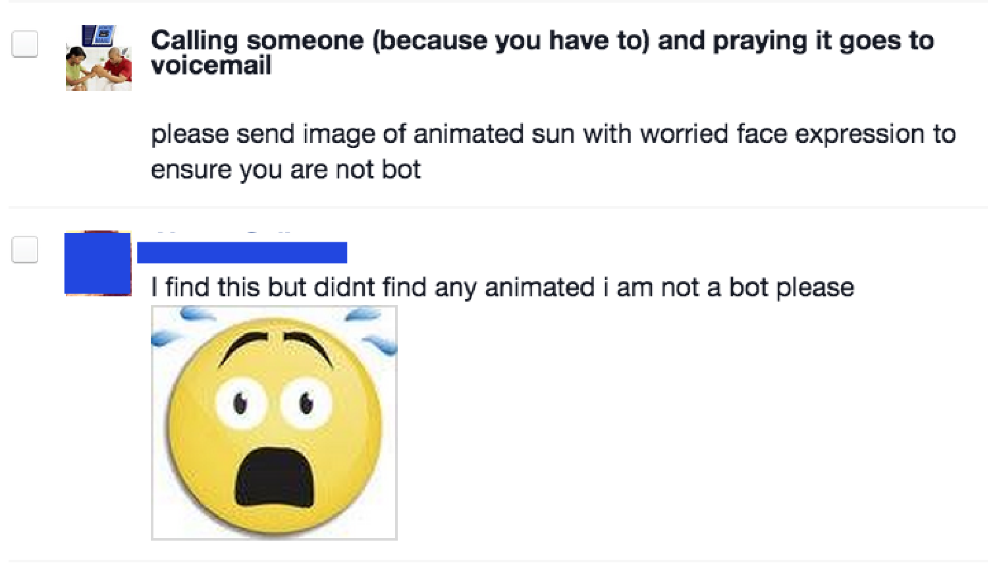
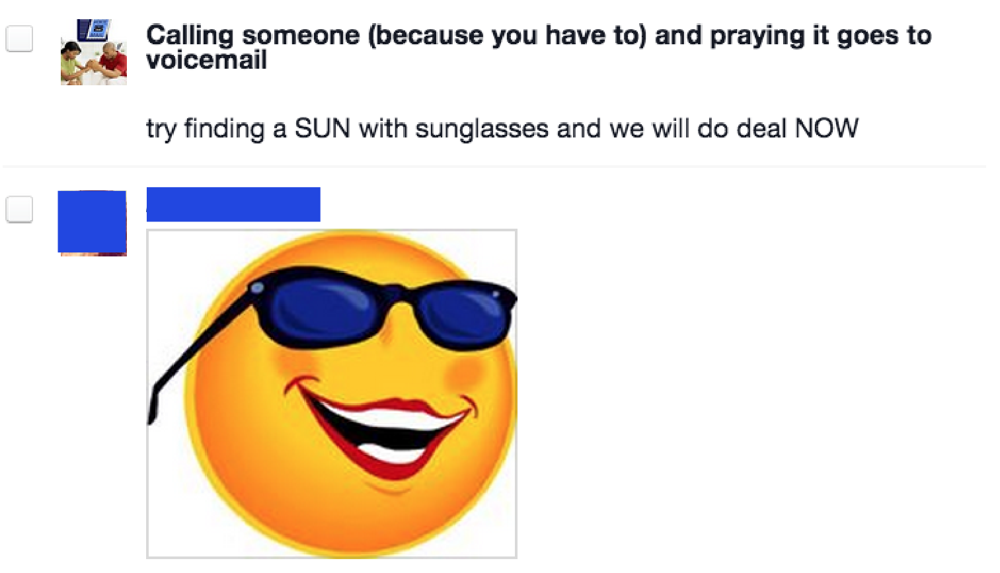
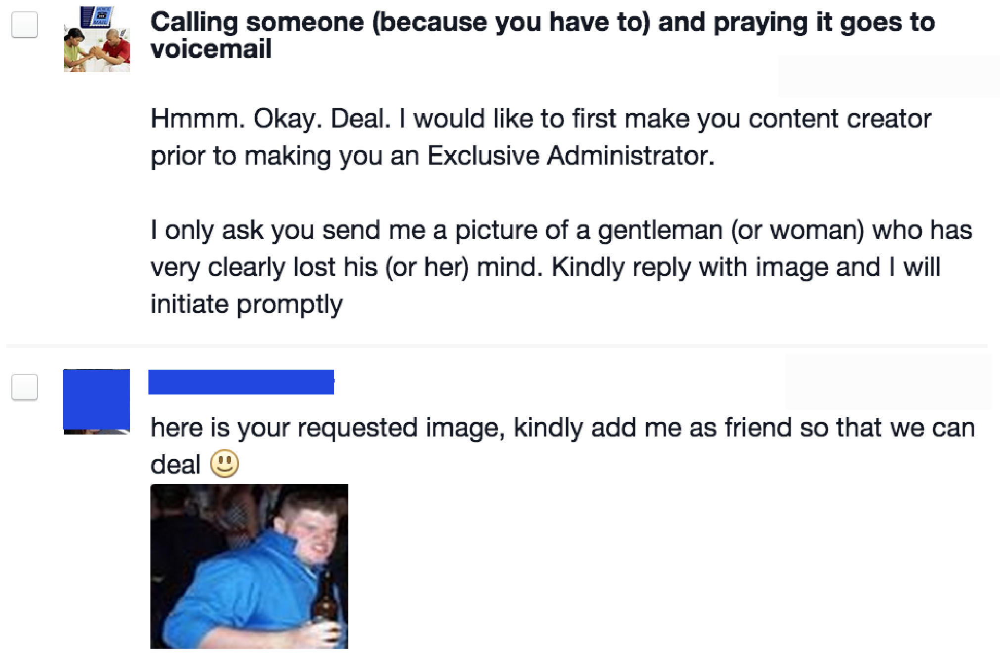
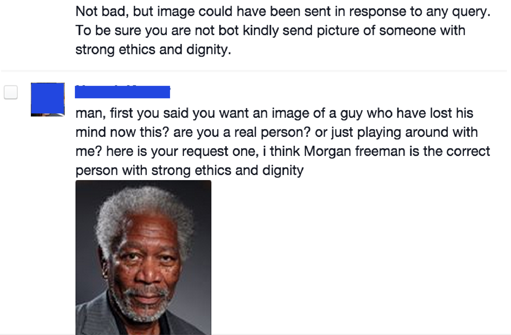
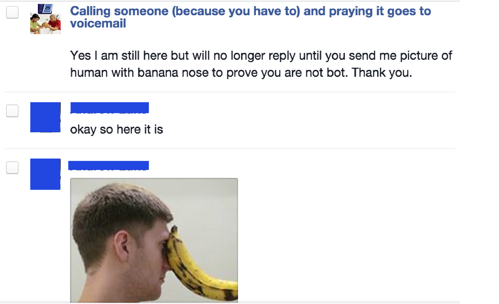

Something from nothing
On a spontaneous whim one night in January 2010, I created a facebook page that I thought might resonate with perhaps a few dozen people. I gave it the brief title Calling someone (because you have to) and praying it goes to voicemail. In a fleeting few minutes before falling asleep, I made the page's image awful photoshop rendering of a couple praying with ms-clipboard phones, and invited 6 close friends to join.
The topic reminded me of a potential Seinfeld plot line. I pictured Costanza complaining to Jerry about how every time he's forced to call someone, the phone gets answered. Picture an enthusiastic Kramer telling Costanza “You know George, you really ought to call people only before 6am or after midnight. That way you get straight to their voicemails!”
I thought the page would appeal to anyone who has used the phone, particularly other Gen-Y'ers. I woke up to see 50 people had liked the page. After a few days and a few thousand likes, membership logarithmically scaled. By the end of the 1st week it grew to 50,000 people. In another few days it doubled. Then it doubled again. Eventually it topped 350,000. One interesting insight turned out to be the user segment analytics:
Huh, 82% of users are age 18-24.
92% are 18-34. 83% are women. 97.5% are 13-34. Now I could work on projects that would "scratch my own itch" and see if it would appear to other millenials like me.
Over the years I've used this page to drive traffic to a few other projects. Most recently, I tried promoting an essay-writing app I made for college undergrads. I found dozens of beta users who loved the software. I later found the idea's financial upside was fairly small when most of the users - including some who gave overwhelingly positive reviews - weren't willing pay $5 for the tool. At least my facebook page gave me a cheap way of figuring out my projects weren't the most commercializable. The posts faired well in terms of impressions they made and the traffic they drove, sometimes each driving a few hundred hits to the links I'd post. In 2013, things changed. Share stats began wildly oscillating from  to  It turned out that facebook revamped its EdgeRank algorithm in a way that heavily impacted page owners. Edgerank, which determines what facebook users see on their main feed, was changed to substantially reduce the impressions for most pages. That angered many users, including a few high profile ones. Some businesses, to this day, have stopped using Facebook altogether. On average, my click-through's per post went from a few hundred to a few dozen, on a good day. Many page administrators saw the same thing. Most speculate that Facebook is trying to milk page admins for their promotion budget, while Facebook takes the position that if the pages make great content its EdgeRank will notice too. It's probably a hybrid of those; Facebook's a public company now, and if all users saw were company posts they'd likely stop checking it 14 times a day. Either way, I'm happy to have ridden the ride and learned a few valuable lessons.
Takeaways
Don't rely on one channel.
There seems to be a half life to most marketing channels. For whatever reason, the channels seem to find a way of being less effective. Once a network is saturated by competitors, ad costs are bid up to match Customer Liftime Values. Other marketers start to abuse the channel so there's more noise to rise above (eg email, social media). Or the platforms themselves realize that marketers are abusing it (eg gmail's 'promotions' tab). Don't expect that if you find a channel that works that it will continue working. If you anticipate this from the very beginning you won't get surprised when click-through's and conversions start cresting off.
Test. Continuously.
I tested status post timing, content and copy featured in updates. I tested the landing page copy and stying to maximize conversions for email collection. I learned how to optimize content for other networks like Twitter. Never stop testing - this applies to your flagship channels as well as new channels. I like the framework Traction lays out. Focus on rapidly finding the most effective channel, and once it's found, have a strategy that lets you methodically test other channels in tandem.
Consumer is hard.
Selling to anyone is tough, but selling consumer software to college undergrads is tough as nails. The contract values aren't high enough to warrant outbound prospecting, so that's out of the picture. Finding a way to get found by customers who aren't looking for your service, at scale, is near impossible. I don't think product is the #1 startup killer. Distribution is. Hence the Luminosity commercials: not many consumers are "in motion" looking for paid brain games. By contrast, businesseses are often "in motion" searching for a solution. Whether it's increasing topline by accelerating lead gen, or utilizing analytics to inform better marketing and product decisions, businesses understand that they often have to spend money. Many will happily pay for XaaS tools so they don't have to build in-house. It let's them focus on their core competencies.
Bonus
There is a dark underbelly to page administration - dealing with the world's least successful scammers. To date I've received about 40 solicitations in the form of facebook messages from people interested in "buying" the page. Five of them, at most, were real offers. The rest promise over 10x the page's market value and once given admin status plan to remove the original admin and cancel their PayPal transfer. With a hat-tip to Rob DenBleyker, I found great satisfaction in testing the imagination and Google prowess of these scammers by asking them to confirm they weren't bots by doing, you know, normal every day image searches.     A closeup of the image...  